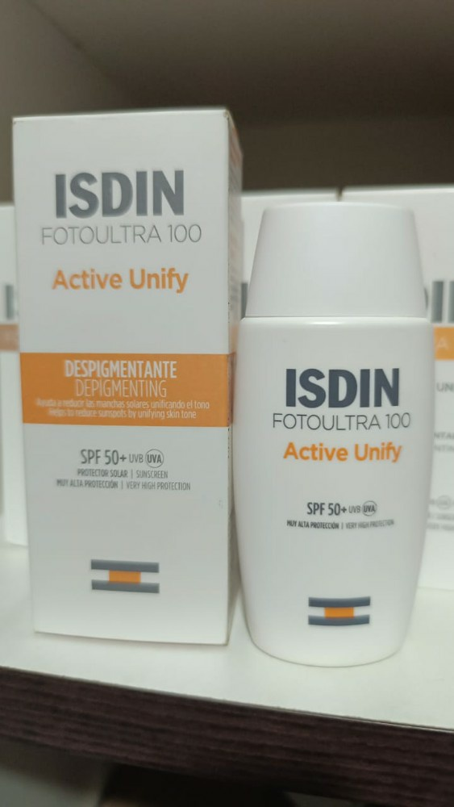
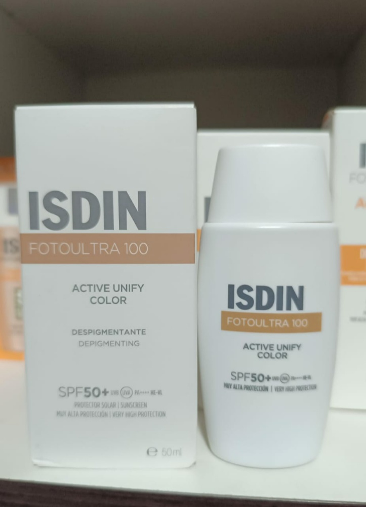
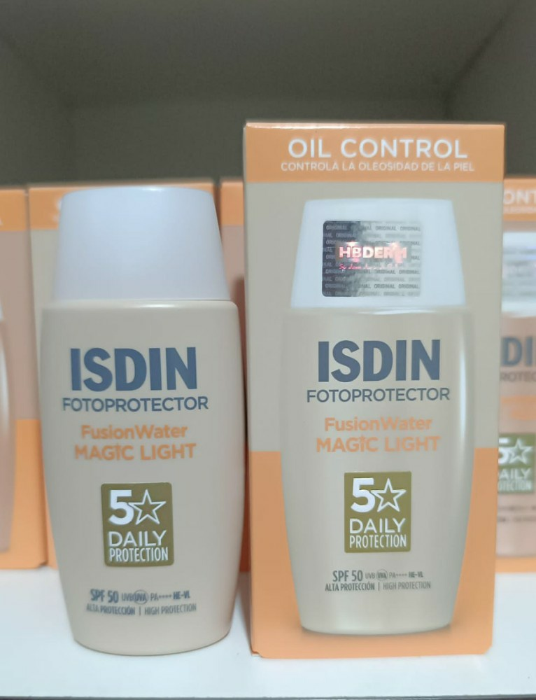
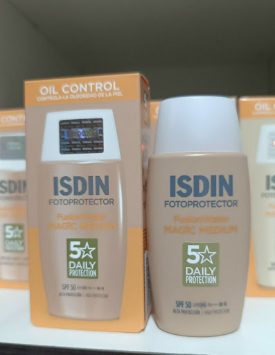
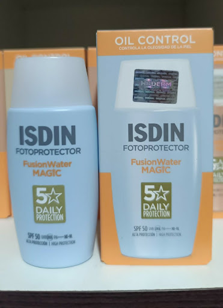
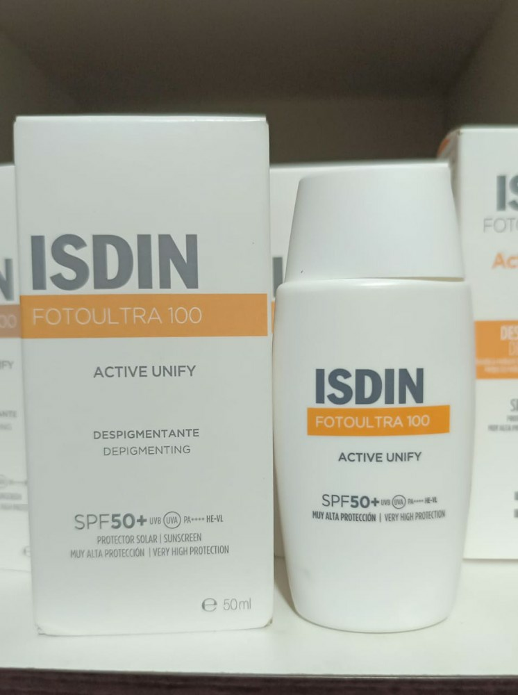

Ideal para: Pieles con manchas solares o tendencia a la hiperpigmentación. No es solo un protector; es un tratamiento que ayuda a reducir y prevenir manchas. Aclara y unifica el tono de la piel gracias a su complejo DP3-Unify.
Bs 250 Consultar por WhatsApp
Ideal para: Quienes buscan tratar manchas y maquillaje en un solo paso. Ofrece la misma acción despigmentante que el original, pero con un tono universal que cubre imperfecciones de inmediato y unifica el rostro con un acabado natural.
Bs 250 Consultar por WhatsApp
Ideal para: Pieles mixtas a grasas con fototipo claro. Protección ultraligera de fase acuosa. Se absorbe al instante, controla la oleosidad y aporta un toque de color claro para un aspecto saludable sin sensación pesada.
Bs 220 Consultar por WhatsApp
Ideal para: Pieles mixtas a grasas con fototipos medios/bronceados. Misma tecnología "Magic" (antioxidante e hidratante) que no irrita los ojos, pero con un tono medio para una cobertura invisible y mate en pieles más morenas.
Bs 220 Consultar por WhatsApp
Ideal para: Deportistas y personas con piel mixta a grasa que buscan una sensación de "cara lavada". Detalle Clave: Es la versión original y más ligera. Se absorbe en segundos sin dejar rastro blanco ni brillo. Diferenciador: Tecnología Wet Skin (se puede aplicar sobre piel mojada) y es altamente resistente al sudor.
Bs 220 Consultar por WhatsApp
Ideal para: Personas que ya están usando otros productos de maquillaje o prefieren un tratamiento invisible para las manchas. Detalle Clave: Ofrece la máxima protección contra los rayos UVA (principales causantes de las manchas). Diferenciador: Textura fluida que se funde con la piel, permitiendo tratar el melasma o las manchas solares de forma discreta y muy efectiva.
Bs 250 Consultar por WhatsApp